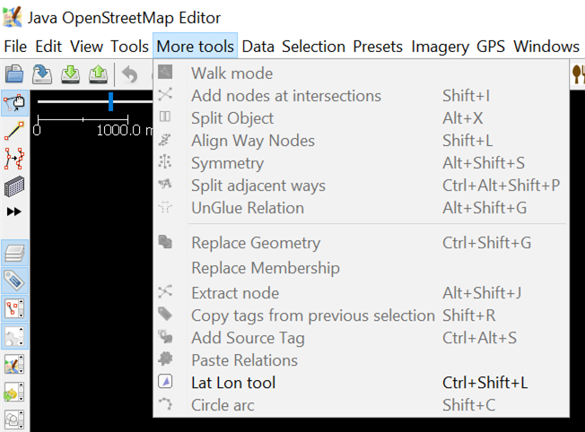
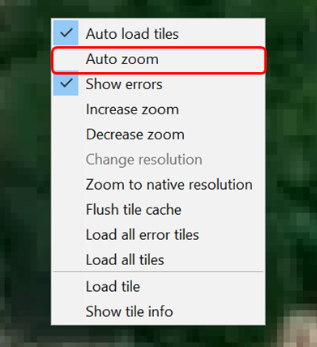
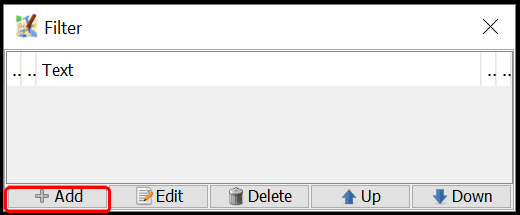
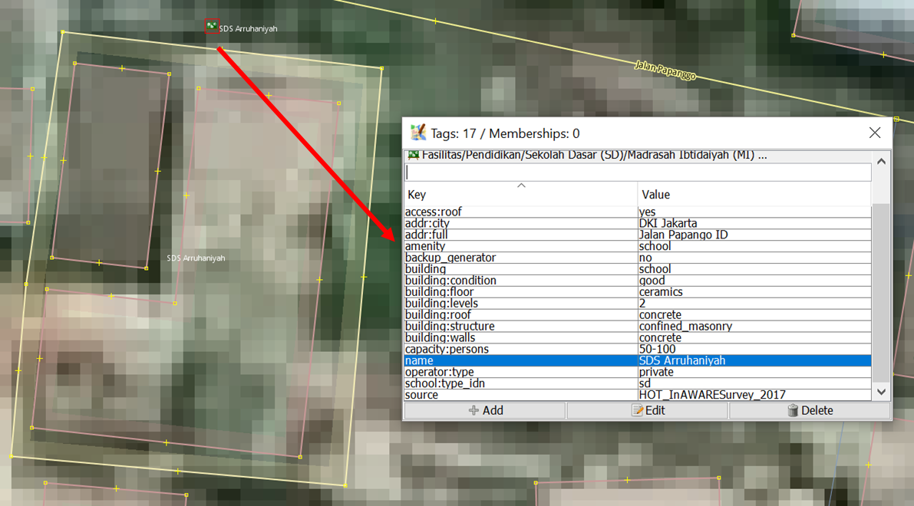
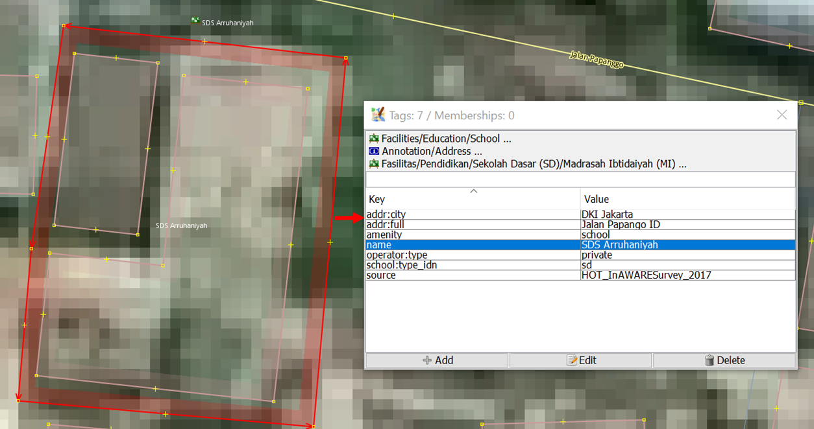
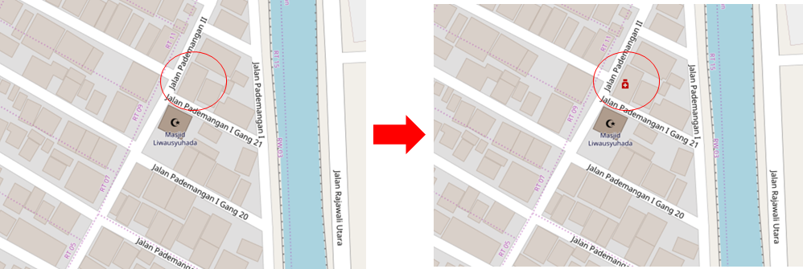

Menambahkan Data Hasil Survei ke OSM Menggunakan JOSM
class="pdf-download-link"> Download page as PDFTujuan Pembelajaran:
- Mampu menerapkan cara menginstal plugin Utilsplugin2
- Mampu menerapkan cara menggabungkan data hasil survei
- Mampu menerapkan cara menyimpan file di JOSM
- Mampu menerapkan cara men-download data OpenStreetMap
- Mampu menerapkan cara memunculkan citra satelit di JOSM
- Mampu menerapkan, menambahkan dan mengubah data OSM menggunakan JOSM
- Mampu menerapkan cara meng-upload perubahan ke OSM
- Mampu menerapkan cara melihat perubahan data OSM di situs OSM
Data OSM dapat diperkaya dengan cara menambahkan atau memetakan objek di OSM. Namun, jika Anda menambahkan data OSM menggunakan citra satelit saja sebagai acuannya, maka informasi objek yang Anda tambahkan tentu terbatas sekali. Survei lapangan dapat membantu Anda dalam melengkapi informasi objek yang dipetakan. Anda dapat mempelajari alat pengumpulan data pada modul Metodologi Pengumpulan Data. Untuk menambahkan data OSM, Anda memerlukan editor data OSM. Banyak sekali editor data OSM yang tersedia, namun pada modul ini editor data OSM yang digunakan adalah JOSM. JOSM menyediakan banyak alat serta plugin yang memudahkan pengguna dalam menambahkan atau mengedit data OSM.
I. Menginstal plugin Utilsplugin2
Sebelum menambahkan atau mengedit data OSM menggunakan JOSM, instal plugin yang akan digunakan terlebih dahulu. JOSM memiliki plugin yang salah satu fungsinya memudahkan Anda untuk menyalin preset/tag yaitu plugin utilsplugin2. Anda harus menginstal plugin ini terlebih dahulu. Langkah-langkah untuk menginstal plugin utilsplugin2 yaitu:
- Buka JOSM
- Klik menu Edit → Preferences
- Pilih menu Plugins (ikon steker) untuk menginstal plugin baru. Jika daftar plugins belum muncul, Anda dapat mengklik Download List namun pastikan komputer/laptop Anda terkoneksi internet.
- Setelah men-download plugin, cari plugin utlisplugin2 dengan menuliskannya pada kolom Search. Setelah berhasil menemukan plugin utilsplugin2, silakan centang kotak plugin utilsplugin2 untuk menginstal plugin tersebut.

Melakukan instalasi plugin utilsplugin2
- Setelah itu klik OK dan tunggu hingga proses instalasi selesai. Jika sudah berhasil diinstal, akan muncul menu More tools.

Tampilan menu More tools pada JOSM
Catatan : Terkadang JOSM meminta Anda untuk melakukan Restart setelah melakukan instalasi plugin baru untuk mengaplikasikan plugin yang baru saja diinstal. Namun, tidak semua plugin membutuhkan Restart untuk dapat digunakan setelah instalasi.
II. Menggabungkan Data Survei
Jika Anda sudah melakukan survei menggunakan alat pengumpulan data seperti ODK Collect dan OpenMapKit, Anda dapat menggunakan data hasil survei tersebut sebagai acuan menambahkan informasi objek di OSM. Data hasil survei yang didapatkan dari ODK Collect dan OpenMapKit formatnya adalah .osm. Banyaknya file .osm hasil survei dari ODK Collect dan OpenMapKit sama dengan banyaknya objek yang disurvei karena informasi satu objek disimpan pada satu file .osm. Untuk memudahkan Anda menggunakan data hasil survei untuk menambahkan informasi objek, gabungkan seluruh file .osm dengan cara:
- Arahkan File Explorer ke direktori tempat penyimpanan file hasil survei dari ODK Collect dan OpenMapKit.

Tampilan direktori penyimpanan file hasil survei menggunakan ODK Collect
- Cari semua file .osm dengan cara ketikkan osm pada kolom Search. Pilih semua file .osm dari hasil pencarian.
Tampilan hasil pencarian pada direktori penyimpanan file hasil survei
- Tarik semua file .osm yang sudah dipilih ke JOSM.
Tampilan layer setelah dimasukkan data hasil survei menggunakan ODK dan OMK
- Pilih semua layer file hasil survei dengan cara pilih layer hasil survei yang paling atas, tekan Shift, pilih layer hasil survei yang paling bawah
- Klik kanan pada layer hasil survei, lalu klik Merge. Setelah itu muncul jendela Select target layer, Anda tidak perlu mengubah target layer nya lalu klik Merge.

Menggabungkan layer hasil survei
- Simpan dan ubah nama layer hasil gabungan seluruh data survei dengan cara klik kanan pada layer hasil gabungan, pilih Save As, ubah nama file nya dan kemudian klik Save.

Menyimpan layer hasil survei yang sudah digabungkan
- Untuk memudahkan Anda menandai objek-objek yang sudah dipetakan atau belum dari layer hasil survei, JOSM menyediakan plugin to-do cara instalasi dan penggunaan secara detailnya dapat dibaca pada modul Menggunakan to-do list di JOSM. Jika plugin to-do list sudah diinstal dan kotak jendela Todo list sudah diaktifkan, pilih semua titik objek yang ada di layer hasil survei yang sudah digabungkan menggunakan ikon Select object, kemudian pada kotak jendela Todo list klik Add.

Memasukkan objek hasil survei ke dalam Todo list
III. Men-download Data OSM
Setelah berhasil menggabungkan data hasil survei, Anda perlu men-download data OSM. Hal ini bertujuan agar dapat mengetahui data OSM yang sudah dipetakan oleh pengguna lainnya dan tersedia di dalam server OSM. Untuk men-download data OSM caranya adalah:
- Klik menu File → Download Data
- Akan muncul jendela Download yang secara default menampilkan tab Slippy Map
Tampilan jendela Download Data OSM
- Jika peta belum menampilkan wilayah pemetaan Anda, geser peta dengan cara klik kanan tahan mouse Anda dan geser/arahkan ke wilayah pemetaan Anda. Kemudian gambar kotak wilayah pemetaan Anda dengan cara klik kiri tahan dan geserkan hingga membentuk kotak warna merah muda yang meliputi seluruh wilayah pemetaan Anda. Setelah itu klik Download.
- Jika wilayah pemetaan Anda cukup sulit mencarinya dengan cara menggeser peta, Anda dapat memilih tab Areas around places dan ketik nama wilayah pemetaan Anda di kolom Enter a place name to search for lalu klik Search. Setelah itu akan muncul nama wilayah yang Anda cari, klik salah satu namanya lalu silakan kembali lagi ke tab Slippy Map. Peta di tab Slippy Map akan menampilkan wilayah yang tadi sudah Anda pilih. Buatlah kotak yang meliputi seluruh wilayah pemetaan Anda, lalu klik Download.
Catatan : Perhatikan banyaknya data OSM yang sudah ada di wilayah pemetaan Anda. Jika sudah cukup banyak sebaiknya Anda tidak langsung men-download seluruh data OSM yang ada di wilayah pemetaan Anda karena JOSM tidak dapat men-download data yang terlalu besar sekaligus. Untuk mengatasinya, Anda dapat men-download data OSM di wilayah pemetaan Anda per bagian.
Tampilan tab “Areas around places” pada jendela Download
- Setelah berhasil men-download data OSM pada wilayah pemetaan Anda, akan muncul layer baru yang juga akan menjadi layer area kerja Anda untuk menambahkan dan mengubah data OSM. Pastikan Anda hanya menambahkan data pada kotak yang tidak diarsir karena kotak yang diarsir sudah bukan wilayah yang Anda download. Pastikan seluruh area survei Anda data OSM nya sudah di-download. Seperti ini tampilannya:
Tampilan JOSM ketika sudah berhasil men-download data OSM
- Jika sudah berhasil men-download data OSM di seluruh area survei Anda, gabungkan layer data OSM hasil download dengan layer hasil survei yang sudah digabung pada subbab sebelumnya. Caranya pilih kedua layer tersebut kemudian klik kanan, pilih Merge. Simpan pada layer hasil survei yang sudah digabung. Kemudian klik Merge.
Menggabungkan layer data OSM dengan data hasil survei
IV. Menambahkan Citra Satelit
- Setelah berhasil men-download data OSM, tambahkan citra satelit untuk acuan dalam memetakan dengan cara mengklik Imagery → pilih citra yang akan digunakan, misalnya DigitalGlobe Premium Imagery. Setelah berhasil menambahkan citra satelit berarti Anda sudah siap untuk menambahkan data OSM. Tampilannya akan seperti ini:

Tampilan data OSM yang sudah ditambahkan citra satelit
- Anda juga dapat mengatur tampilan citra satelit yang Anda gunakan. Caranya, pilih layer citra satelitnya kemudian klik pada ikon Change visibility of selected layer lalu ubah tampilannya sesuai keinginan Anda.

Mengubah tampilan citra satelit
- Terkadang citra satelit yang digunakan khususnya DigitalGlobe Premium Imagery memiliki perbedaan tampilan ketika di zoom in dan zoom out dan hanya salah satunya yang sesuai dengan data OSM nya. Agar tampilan citranya tidak berubah-ubah ketika di zoom in atau zoom out, nonaktifkan fitur Auto zoom dengan cara klik kanan pada citra di kanvas kerja → klik Auto zoom sehingga tanda centang pada Auto zoom hilang.

Menonaktifkan Auto zoom pada citra satelit
V. Mengedit dengan JOSM
Setelah menginstal plugin utilsplugin2, menggabungkan data hasil survei, men-download data OSM, serta memasukkan citra satelit, sekarang Anda sudah siap menambahkan/mengubah data OSM menggunakan JOSM. Anda dapat menggambar objek yang belum dipetakan atau mengubah objek yang sudah dipetakan menggunakan alat-alat yang sudah Anda pelajari pada modul Menggunakan JOSM. Berikut ini adalah cara mengedit data OSM menggunakan data hasil survei, data OSM dan citra satelit yang sudah dibuka sebelumnya di JOSM:
- Setelah berhasil mengikuti langkah-langkah pada empat subbab sebelumnya, pada JOSM Anda akan terdapat dua layer yang terbuka di JOSM yaitu layer citra satelit (pada gambar adalah layer DigitalGlobe Premium Imagery) dan layer data hasil survei yang sudah digabungkan dengan data OSM yang di-download (pada gambar adalah layer hasil_survey_jakut.osm). Tampilannya akan seperti ini:

Tampilan JOSM setelah dimasukkan data hasil survei dan citra satelit
- Agar Anda tidak mengubah batas administrasi yang sudah dipetakan pada OSM, Anda dapat menggunakan fitur Filter pada JOSM. Hal ini dikarenakan batas administrasi merupakan hal yang bersifat khusus dan tidak terkait dengan objek lainnya di dalam OSM. Untuk menggunakan fitur Filter, aktifkan kotak jendela Filter dengan cara klik menu Windows → Filter. Akan muncul kotak jendela Filter di sebelah kanan kanvas kerja Anda. Klik Add pada kotak jendela Filter, tuliskan boundary=administrative pada kolom Filter string dan kemudian klik Submit Filter. Akan muncul sebuah filter baru untuk batas administrasi, untuk menonaktifkan filter Anda dapat menghilangkan tanda centang di sebelah filter. Untuk mengetahui lebih lanjut mengenai fitur Filter JOSM, Anda dapat mempelajari modul Menggunakan Alat Filter di JOSM.

Tampilan kotak jendela Filter

Mengisi filter string pada jendela Filter

Tampilan kotak jendela filter yang sudah ditambahkan sebuah filter
- Setelah itu, mulai lakukan pemetaan dengan perbesar ke sebuah objek langsung, pilih salah satu objek yang ada di kotak jendela todo list kemudian klik Zoom. Setelah titik objek tersebut diperbesar dan terpilih, Anda dapat menyalin tag yang ada di objek tersebut ke objek OSM ter-download. Caranya pilih objek OSM ter-download yang bertampalan/berdekatan dengan titik objek hasil survei yang sebelumnya dipilih, kemudian pilih menu More tools → Copy tags from previous selection atau tekan Shift + R di keyboard. Pastikan objek yang Anda pilih sebelum menyalin tag adalah objek hasil survei yang bertampalan/berdekatan dengan objek OSM ter-download. Pastikan juga tag yang disalin sudah sesuai dengan aturan OSM serta sudah sesuai juga dengan objeknya. Seperti pada contoh objek klinik yang berada di ruko di bawah ini, objek titik hanya berisi tag yang sesuai untuk objek titik, sedangan tag yang berisi informasi bangunan diberikan ke objek bangunan dimana objek titik tersebut berada. Jika sudah selesai menyalin tag dari satu objek, klik Mark untuk menandakan bahwa objek tersebut sudah dimasukkan ke OSM. Ulangi langkah-langkah tersebut sampai semua objek selesai dimasukkan.

Menggunakan fitur Zoom dan Mark pada Todo list

Menyesuaikan isi tag dengan objek titik
Menyalin tag mengenai bangunan menggunakan Shift + R
- Contoh objek yang dipetakan di atas digambarkan sebagai sebuah titik. Jika Anda menemukan objek yang sebaiknya digambarkan sebagai poligon, seperti misalnya kompleks sekolah yang memiliki lebih dari satu bangunan. Caranya hampir sama dengan memetakan objek titik pada langkah sebelumnya. Pilih titik objek sekolah yang akan dipetakan pada jendela todo list kemudian klik Zoom. Pilih titik objek sekolah lalu salin tag dari objek titik sekolah yang akan dipetakan dengan memilih objek poligon bangunan yang bertampalan/berdekatan dengan titik objek sekolah tersebut kemudian klik menu More tools → Copy tags from previous selection atau tekan Shift + R di keyboard. Setelah tag berhasil disalin, hapus tag yang tidak berhubungan dengan bangunan dan sisakan tag yang berhubungan dengan bangunan. Gambar kawasan sekolah yang meliputi seluruh bangunan menggunakan Draw nodes, lalu salin tag yang sesuai dengan informasi kawasan sekolah (yang sebelumnya dihapus pada poligon bangunan) seperti amenity, name dan addr. Setelah selesai memetakan kompleks sekolah, hapus objek titik hasil survei karena sudah dipetakan sebagai poligon kawasan sekolah.

Objek sekolah hasil survei

Menyesuaikan isi tag dengan bangunan sekolah

Menyesuaikan isi tag dengan kawasan sekolah
VI. Menyimpan Perubahan
- Jika Anda sudah selesai menambahkan/mengubah objek menggunakan JOSM, simpan perubahan tersebut ke server OSM karena data yang Anda tambahkan/ubah hanya ada di komputer Anda saja. Untuk menyimpan perubahan ke server OSM, caranya klik menu File → Upload Data.
- Apabila terdapat peringatan/kesalahan (warning/error) setelah Anda mengklik Upload Data, sebaiknya peringatan/kesalahan tersebut diperbaiki terlebih dahulu. Untuk cara-cara memperbaiki peringatan/kesalahan dan jenis-jenis peringatan/kesalahan yang sering ditemui, Anda dapat mempelajari modul Penggunaan JOSM untuk Validasi Data Survei. Namun, jika Anda belum memahami bagaimana cara untuk memperbaiki peringatan/kesalahan, maka Anda dapat langsung mengklik Continue Upload dan akan muncul jendela Upload.
- Jika tidak ada peringatan/kesalahan (warning/error), akan langsung muncul jendela Upload. Pada jendela Upload tersebut, pada kolom komentar isikan penambahan dan perubahan yang dilakukan dan pada kolom sumber tuliskan citra satelit yang digunakan untuk memetakan. Tuliskan juga ‘survey’ pada kolom sumber apabila Anda melakukan survei. Jika Anda merasa pekerjaan Anda perlu diperiksa oleh pengguna lain yang sudah mahir dalam memetakan menggunakan OSM, silakan centang I would like someone to review my edits. Setelah itu klik Upload Changes.
Tampilan jendela Upload
Catatan: Ketika Anda memetakan suatu wilayah, sebaiknya Anda meng-upload-nya secara berkala agar tidak terlalu banyak perubahan yang di-upload. Semakin banyak perubahan yang di-upload akan semakin lama pula proses upload-nya selesai. Apabila hasil pekerjaan Anda sudah terlanjur banyak jumlahnya, sebaiknya Anda meng-upload-nya per bagian. Caranya, pada jendela Upload, pilih tab Advanced dan pilih Upload data in chunks of objects. Kemudian isi Chunk size nya dengan jumlah perubahan yang akan di-upload per bagian, misalnya 500. Hal ini bertujuan agar upload tidak terputus di tengah jalan, terutama apabila internet tidak stabil dan juga menghindari terjadinya kesalahan duplikasi objek.
VII. Menyimpan File .osm
- Anda juga dapat menyimpan layer hasil pekerjaan Anda dengan cara klik kanan di layer tempat pekerjaan Anda dan pilih Save. Akan muncul jendela Save OSM file seperti di bawah ini. Tuliskan nama file .osm nya sesuai yang Anda inginkan, kemudian klik Save. File hasil pekerjaan Anda akan tersimpan dengan format .osm.
Tampilan jendela Save OSM File
Catatan : Apabila Anda belum selesai memetakan wilayah pemetaan Anda dan ingin melanjutkan memetakan, Anda dapat menyimpan pekerjaan Anda terlebih dahulu dalam format .osm dan melanjutkannya. Caranya, buka file .osm yang sudah disimpan dengan mengklik menu File → Open kemudian pilih file yang akan dibuka dan klik Open. Setelah dibuka, perbarui data OSM tersebut dengan mengklik menu File → Update Data dan setelah itu Anda dapat melanjutkan pemetaan dan meng-upload-nya seperti langkah yang telah dibahas sebelumnya.
VIII. Melihat Perubahan di Peta
- Anda dapat melihat perubahan di peta OSM dengan mengeceknya pada situs web OSM https://www.openstreetmap.org dan mengarahkan peta ke wilayah pemetaan yang sudah Anda tambahkan datanya. Perlu diingat, perubahan baru dapat dilihat beberapa saat setelah Anda meng-upload hasil pemetaan ke server OSM.

Tampilan perubahan sebelum (kiri) dan sesudah (kanan) proses pemetaan
RINGKASAN
Jika Anda dapat mengikuti dan memperhatikan seluruh tahapan dalam bab ini, maka Anda telah berhasil menerapkan proses pemetaan OSM menggunakan JOSM. Anda sudah dapat menerapkan proses menambahkan data hasil lapang ke dalam OpenStreetMap seperti men-download data OSM, menambahkan citra satelit, mengedit dengan JOSM, meng-upload hasil pemetaan, menyimpan hasil pemetaan menjadi format .osm dan melihat perubahan hasil pemetaan. Anda dapat memasukkan hasil survei secara berkala ke dalam OSM, misalnya hasil survei berdasarkan administrasi kelurahan. Jika Anda sudah melakukan survei di satu kelurahan, maka Anda dapat memasukkan data tersebut ke dalam OSM. Hal ini dapat menghindari terjadinya penumpukan data survei dan Quality Assurance dapat melakukan validasi data.